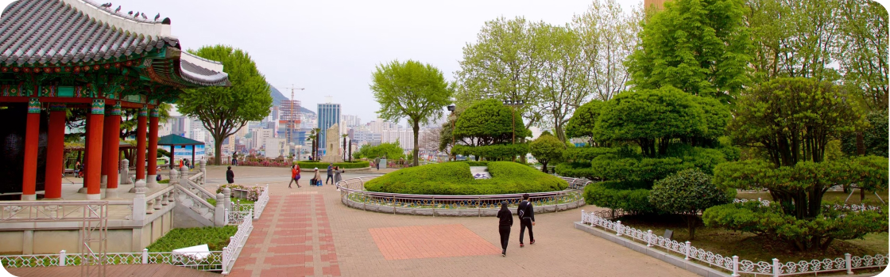

SUA PRÓXIMA VIAGEM:
Conheça Busan
Busan, a estrela em ascensão da Coreia do Sul, oferece de tudo, desde churrascarias de primeira linha até tradicionais barracs de comida de rua. Aqui, exploramos a segunda cidade da Coreia do Sul e descobrimos as suas ofertas culínaria
Para os amantes de historia
Descubra 3 Destinos imperdiveis em busan
As atrações de Busan vão desde templos budistas centenários até praias imaculadas. Esta cidade litorânea tem muitas coisas para fazer o ano todo - as famílias podem passar tempo em um aquário à beira-mar, os compradores podem explorar bairros vibrantes, e os amantes da natureza podem desfrutar de longas caminhadas até mirantes panorâmicos.
- História
-
Templo Beomeo-sa

O Templo Beomeo-sa é um dos maiores santuários da Coreia do Sul. Ele está localizado no alto da montanha Geumjeongsa e fica distante da agitação da cidade. O Daeungjeon Hall do templo é um exemplo bem preservado da arquitetura da Disnatia Joseon.
Bom para:
- História
-
Parque YongDusan
O Parque YongDusan, localizado no centro de Busan, abriga alguns dos monumentos mais importantes da cidade. Você pode ver vistas espetaculares do topo da Torre Busan, de 120 metros de altura. O parque tem 2 museus - confira os instrumentos musicais tradicionais no Museum of World Folk Instruments e mais 80 veleiros coreanos no Exhbition Hall of World Model Boats.
Bom para:
- Casais
- Famílias
- Orçamento
Templo Haedong Yonggungsa

O Templo Haedong Yonggungsa é um templo budista localizado no extremo nordeste de Busan. Construído em 1376, é um dos poucos templos à beira-mar - você pode desfrutar de vistas do Mar do Leste de um Lado e de belas montanhas do outro
Bom para: